Top view of a Binary Tree
Problem Statement: Given a Binary Tree, return its Top View. The Top View of a Binary Tree is the set of nodes visible when we see the tree from the top.
Examples
Input:Binary Tree: 1 2 3 4 10 9 11 -1 5 -1 -1 -1 -1 -1 -1 -1 6
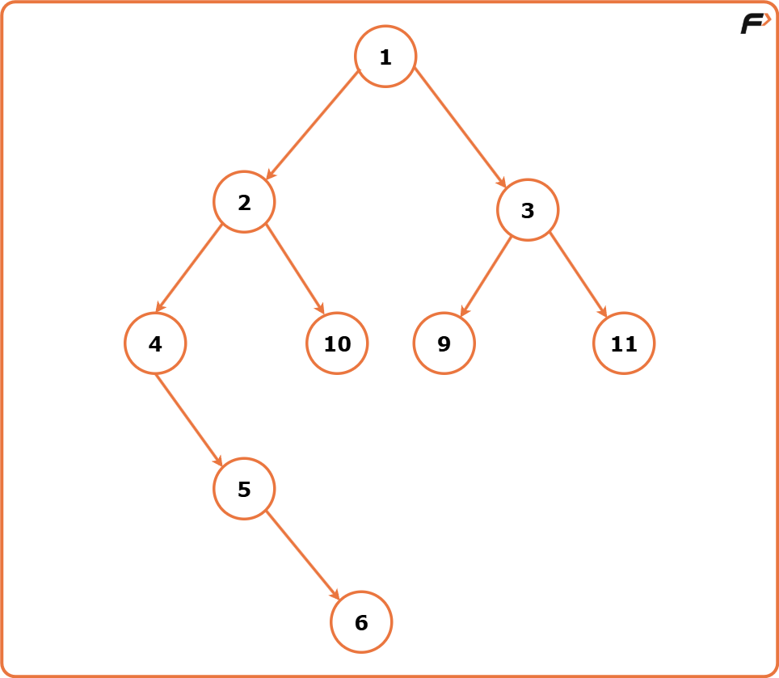
Output: Top View: [4, 2, 1, 3, 11] Explanation: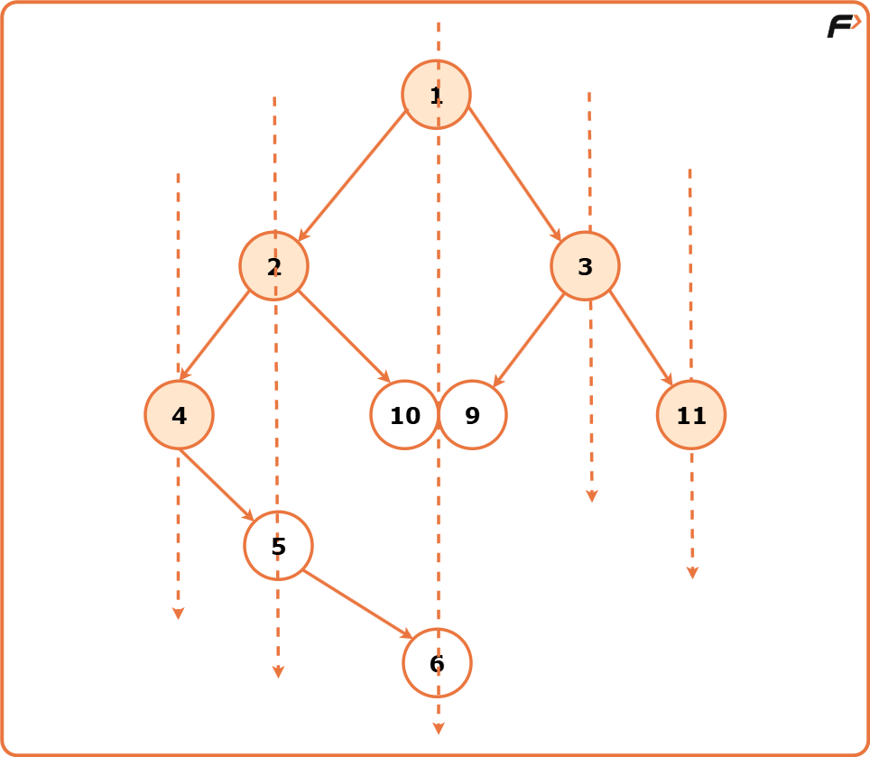
Input:Binary Tree: 2 7 5 2 6 -1 9 -1 -1 5 11 4 -1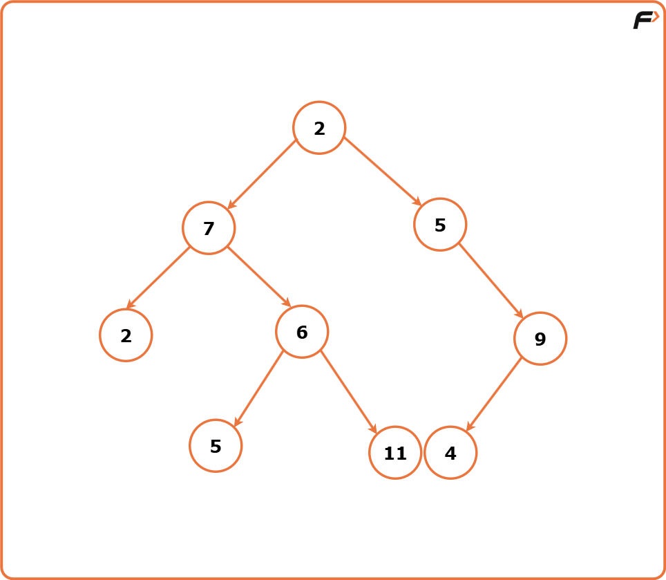
Output : Top View: [2, 7, 2, 5, 9] Explanation: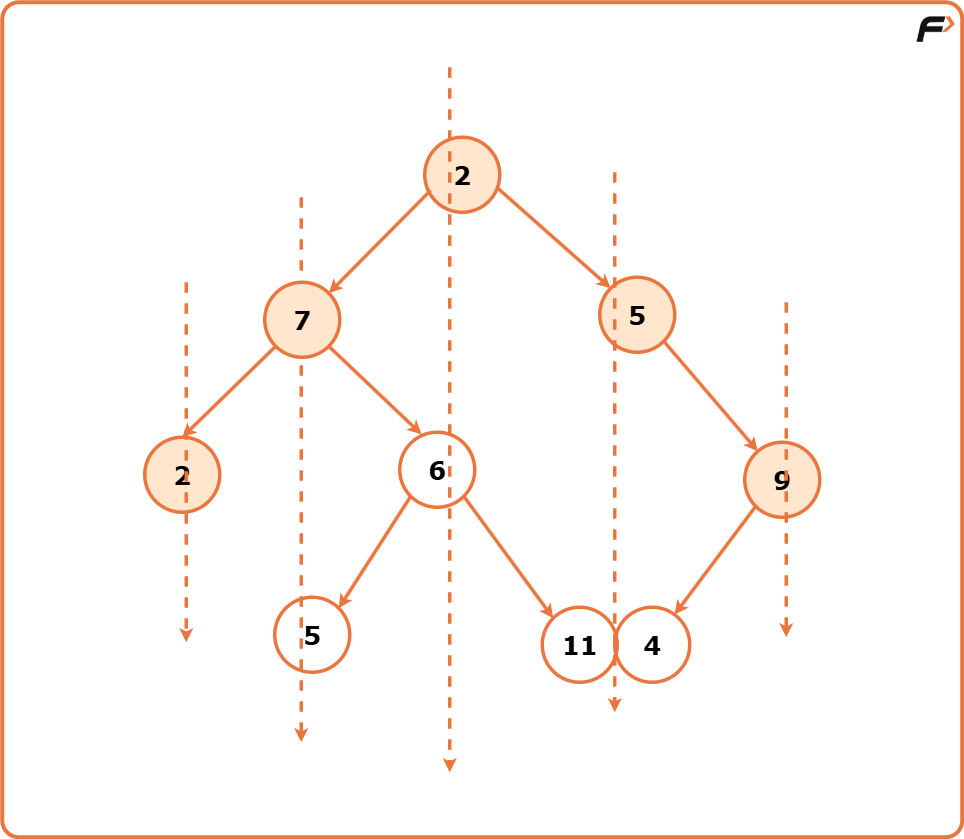
Disclaimer: Don’t jump directly to the solution, try it out yourself first.
Approach
Algorithm
To imagine the Binary Tree from above, we visualise vertical lines passing through the tree. Each vertical line represents a unique vertical position. Nodes to the right of the tree’s centre are assigned positive vertical indexes. As we move to the right, the vertical index increases. Nodes to the left of the tree’s centre are assigned negative vertical indexes. As we move to the left, the vertical index decreases.
We use a map data structure to store the nodes corresponding to each vertical level of the tree as the map automatically sorts the elements based on their ascending value. Against each vertical level, the node highest in the tree at that vertical level is added by traversing the tree level order wise (BFS).
- Create a vector `ans` to store the result. Check if the tree is empty. If it is, return an empty vector.
- Create a map to store the top view of nodes based on their vertical positions. The key of this map is the vertical index and the value is the node’s data.
- Initialise a queue to perform breadth first traversal. Each element of this queue is the node of the binary tree along with its vertical coordinate. Enqueue the root node into the queue with its vertical position initialised to 0.
While the queue is not empty, pop the front node of the queue and for this node:
- Get its vertical position. If this vertical position is not in the map, add the node’s data to the map. This means that this node is the first node encountered at this vertical position during the traversal.
- If the vertical position of this node is already a key in the map, it implies that a node higher in the tree with the same vertical position has already been processed.
- Enqueue the left child with a decreased vertical position ie. current vertical index -1. As when we move to the left child, we are moving towards the left column in the vertical order traversal.
- Enqueue the right child with an increased vertical position ie. current vertical index + 1. As when we move to the right child, we are moving towards the right column in the vertical order traversal.
- Since the keys of the map are sorted based on their keys (vertical positions), the nodes added to the `ans` vector will be sorted left to right.
- Return the ‘ans’ vector.
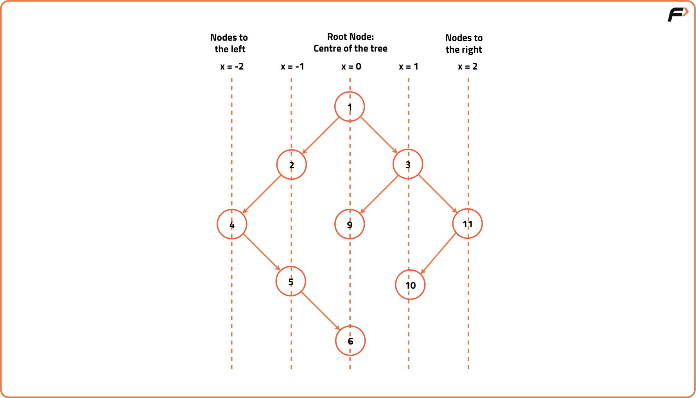
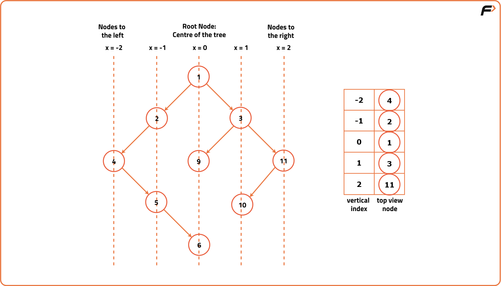
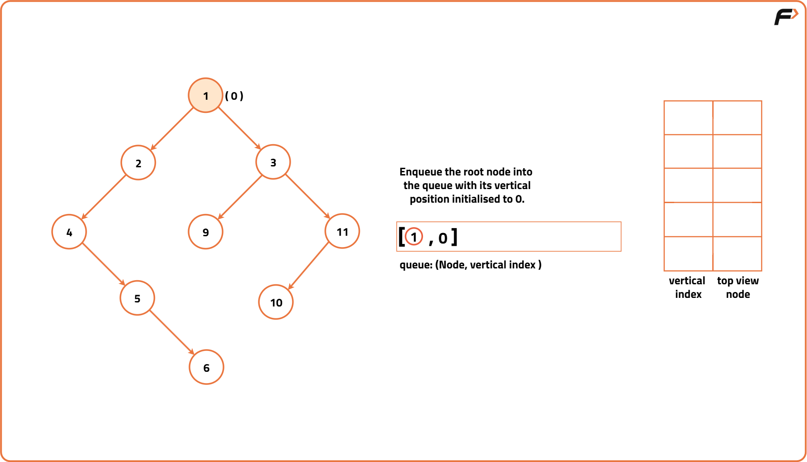
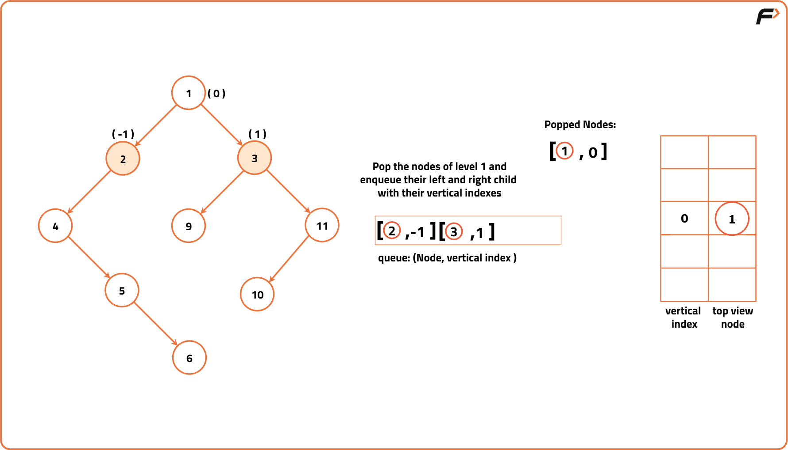
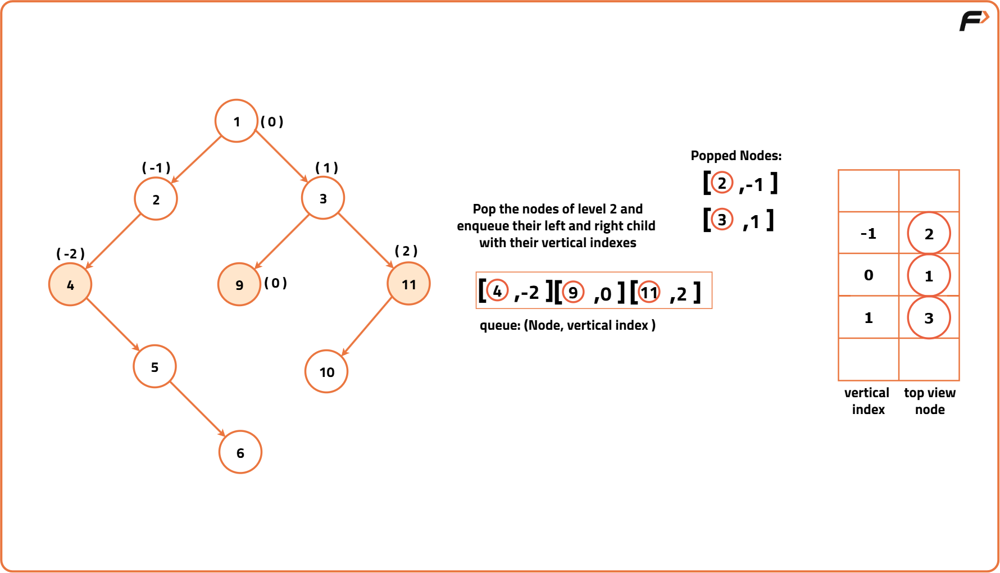
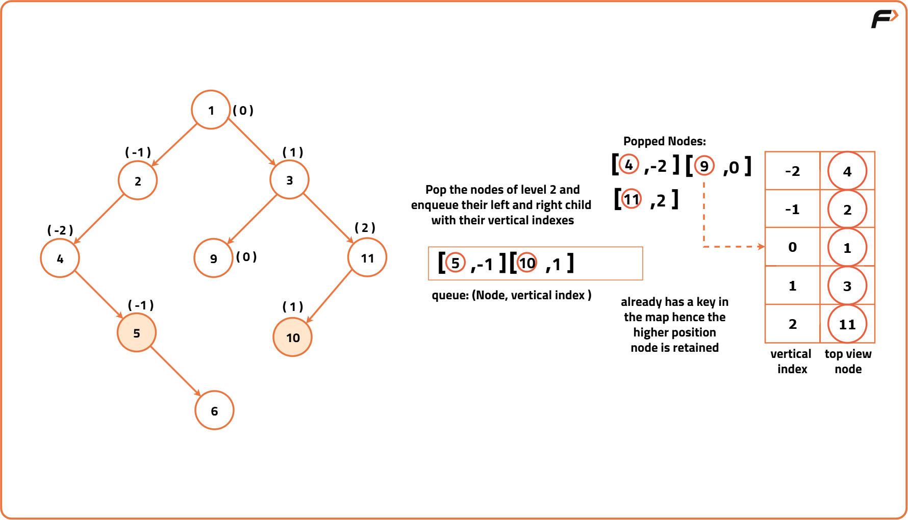
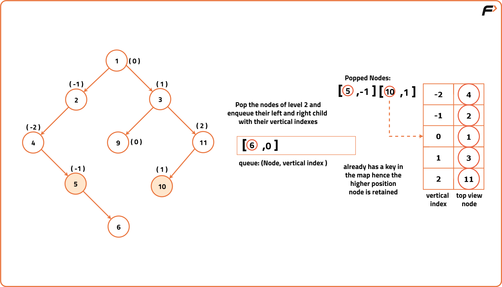
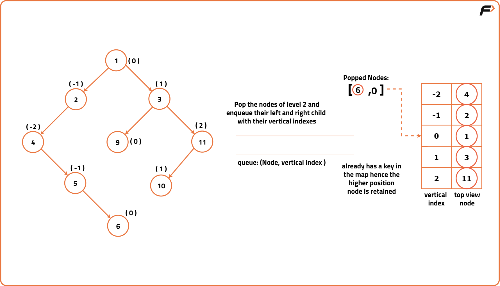
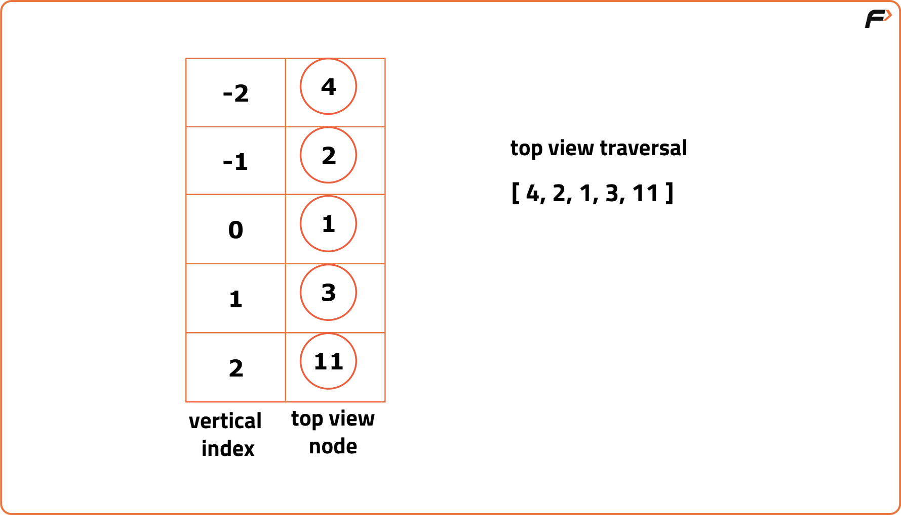
Code
#include <bits/stdc++.h>
using namespace std;
// Structure representing each node of the binary tree
struct Node {
// Value stored in the node
int data;
// Pointer to the left child
Node* left;
// Pointer to the right child
Node* right;
// Constructor to initialize a node with a value
Node(int val) : data(val), left(nullptr), right(nullptr) {}
};
// Class containing the logic for top view
class Solution {
public:
// Function to return the top view of the binary tree
vector<int> topView(Node* root) {
// Create a vector to store the final answer
vector<int> ans;
// If the tree is empty, return an empty result
if (root == NULL) {
return ans;
}
// Create a map to store vertical level -> node value (only first encountered)
map<int, int> mpp;
// Create a queue for BFS that stores {node, vertical_level}
queue<pair<Node*, int>> q;
// Push the root node with vertical level 0
q.push({root, 0});
// Start BFS traversal
while (!q.empty()) {
// Extract the front element of the queue
auto it = q.front();
q.pop();
// Get the node and its vertical position
Node* node = it.first;
int line = it.second;
// If this vertical position is being visited for the first time, store it
if (mpp.find(line) == mpp.end()) {
mpp[line] = node->data;
}
// If there is a left child, push it with vertical level - 1
if (node->left != NULL) {
q.push({node->left, line - 1});
}
// If there is a right child, push it with vertical level + 1
if (node->right != NULL) {
q.push({node->right, line + 1});
}
}
// Traverse the map and store values in the answer vector
for (auto it : mpp) {
ans.push_back(it.second);
}
// Return the result
return ans;
}
};
// Driver code
int main() {
// Create the sample binary tree
Node* root = new Node(1);
root->left = new Node(2);
root->left->left = new Node(4);
root->left->right = new Node(10);
root->left->left->right = new Node(5);
root->left->left->right->right = new Node(6);
root->right = new Node(3);
root->right->right = new Node(10);
root->right->left = new Node(9);
// Create a Solution object
Solution solution;
// Get the top view
vector<int> result = solution.topView(root);
// Print the top view traversal
cout << "Top View Traversal: ";
for (auto node : result) {
cout << node << " ";
}
return 0;
}
Complexity Analysis
Time Complexity: O(N) where N is the number of nodes in the Binary Tree. This complexity arises from visiting each node exactly once during the BFS traversal.
Space Complexity: O(N/2 + N/2) where N represents the number of nodes in the Binary Tree. The main space consuming data structure is the queue used for BFS traversal. It acquires space proportional to the number of nodes in the level it is exploring hence in the worst case of a balanced binary tree, the queue will have at most N/2 nodes which is the maximum width.Additionally, the map is used to store the top view nodes based on their vertical positions hence its complexity will also be proportional to the greatest width level. In the worst case, it may have N/2 entries as well.